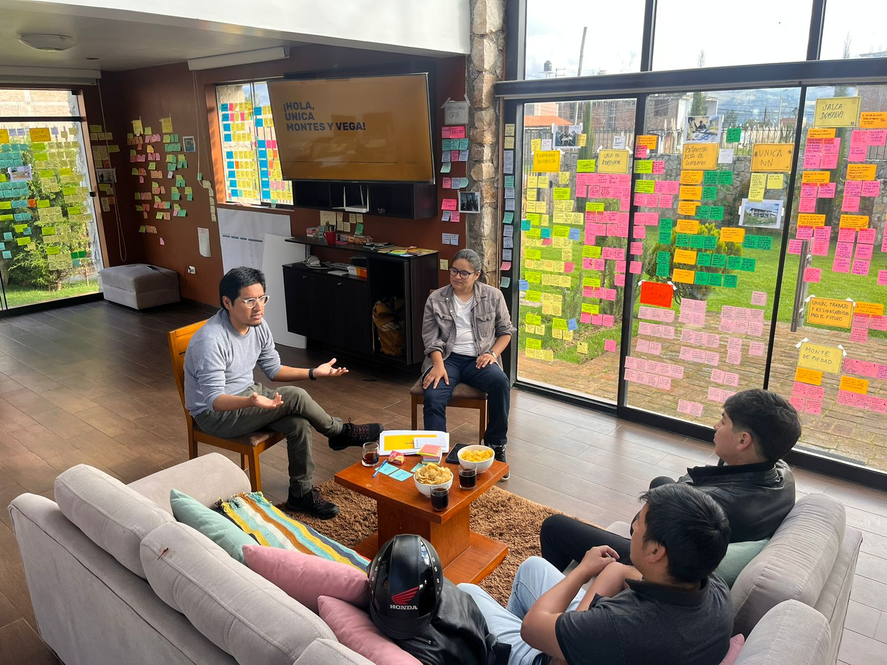
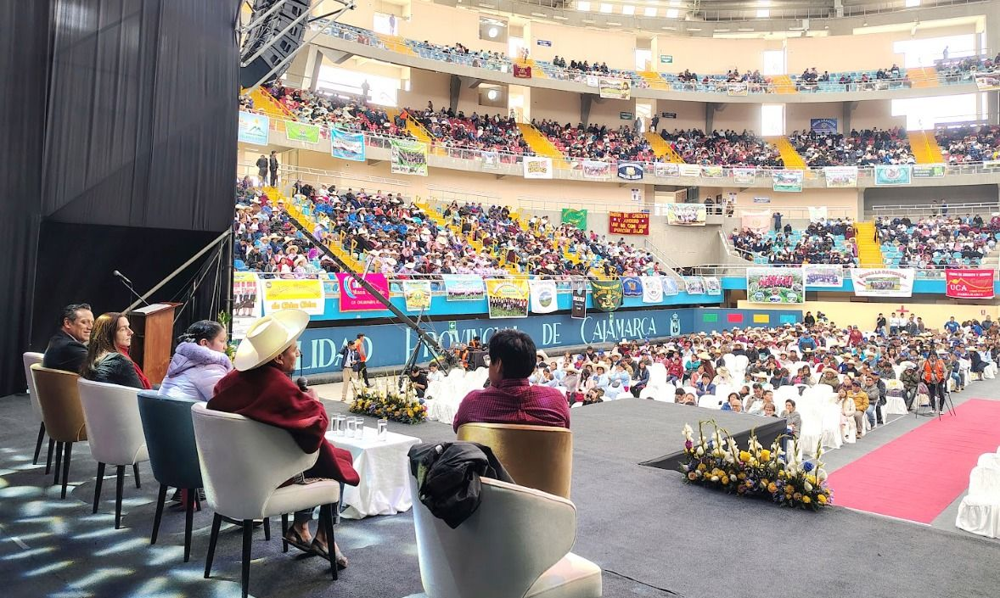

Dimensionar 15 años de impacto
Newmont-ALAC llevaba 15 años invirtiendo en el programa UNICA (Uniones de crédito y ahorro comunal en Cajamarca) con resultados financieros sólidos pero sin poder demostrar el impacto humano que lo sostenía.
Al acercarse a una evaluación formal, el cliente enfrentaba una pregunta difícil: ¿cómo justificas la próxima década de inversión cuando tus datos miden el dinero que se mueve pero no las vidas que cambian?
El proyecto fortaleció el tejido comunitario de las UNICAs a través de una plataforma regional que impulsa el emprendimiento y la inclusión financiera, potenciando la conexión y el sentido de pertenencia entre los socios. Se convirtió en la base para el diseño del próximo ciclo estratégico de 10 años del programa UNICA.
Lo que hicimos
Inmersión en campo y Laboratorio Vivo
Rechazamos trabajar en remoto. Abrimos una casa en Cajamarca y la convertimos en el primer paso en un Laboratorio Vivo. Durante 15 días recibimos a líderes comunales, gerentes de proyecto y ejecutivos en un mismo espacio, sintetizando en tiempo real artefactos de campo, testimonios directos y mapeo territorial.

La escuela de Liderazgos positivos
Identificamos que las socias más sólidas no solo manejaban herramientas financieras: eran el tejido de confianza de su comunidad. Diseñamos una intervención para visibilizar y fortalecer ese liderazgo, dándoles un lenguaje y una plataforma para formar líderes cívicas capaces de navegar crisis de forma independiente.

Museo de Impacto: de la donación a la transformación
Materializamos 15 años de trabajo en un Museo de Impacto: una narrativa estratégica y una hoja de ruta física que le permitió a Newmont pasar de una mentalidad de donación a una de transformación social. El impacto fue validado con más de 40 líderes comunitarios.
